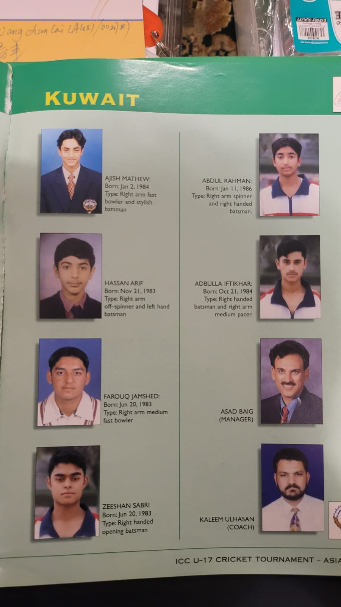
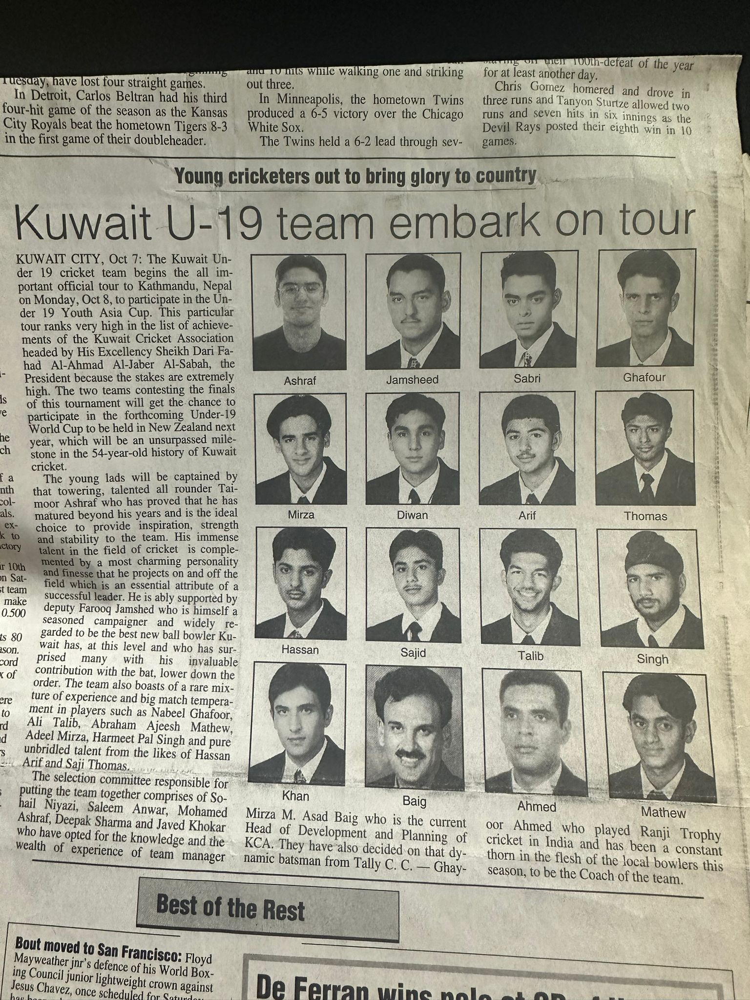
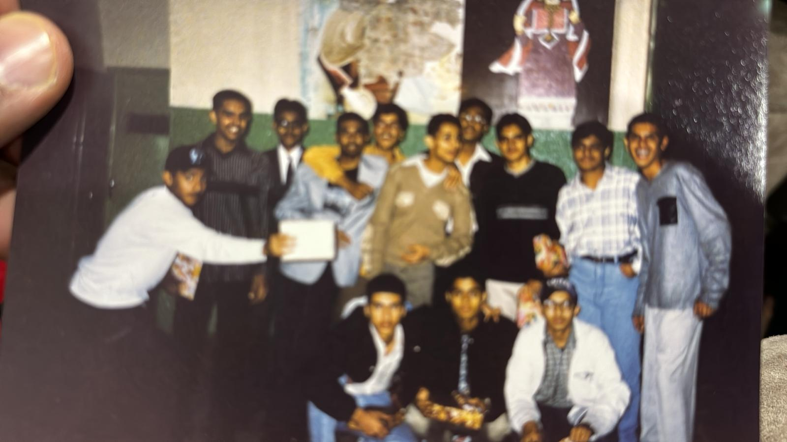

Chapter Three
Return and Reinvention
Kuwait · 1992
"Reinvention is not about discarding the past. It is about taking what is broken and giving it new alignment."

Kuwait in 1992 was a country that had survived invasion and occupation, but the scars were everywhere — in the burnt oil fields, in the missing faces, in the guarded optimism of people rebuilding homes that had been looted or destroyed. Returning was not a homecoming. It was another reinvention.
Our family came back to a changed landscape. The expatriate community had fractured. Some families never returned. Others came back to find their jobs had been filled, their apartments occupied, their bank accounts frozen. The social fabric that had defined our life in Kuwait had to be rewoven, thread by thread.
Finding Anchor in Discipline
It was during this period that cricket became more than recreation. The cricket field was one of the few places where the old community still functioned. The same faces, the same rivalries, the same unspoken code of respect. It became my anchor — a place where discipline was rewarded, where strategy mattered more than status, and where you proved yourself through performance, not pedigree.
I did not realize it then, but the cricket field was teaching me the fundamentals of what would become my approach to organizational transformation. Adapt your strategy to the conditions. Respect the strengths of your opponent. Play within the rules, but find every advantage the rules allow. And never, ever mistake a bad innings for a bad career.

Identity in Flux

The return forced a question that I suspect every displaced person confronts: Who are you when the context that defined you disappears? In Pakistan, I had been defined by my Kuwait connection. In post-war Kuwait, that connection was no longer currency. I had to find a new source of credibility, a new way to belong without losing the core of who I was.
This is the essence of the Identity Preservation Under Change Framework. It is not about resisting change — that is futile. It is about identifying the non-negotiables, the values and principles that remain constant regardless of context, and building everything else around them. For me, those non-negotiables were discipline, integrity, and the refusal to accept broken systems as permanent.
The Gulf War taught me resilience. The return taught me reinvention. Together, they formed the foundation for everything that followed.